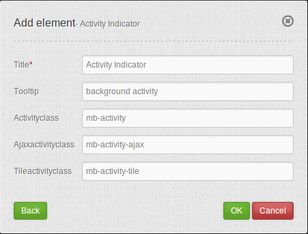

Activity Indicator¶
The activity indicator element provides a simple widget showing background activity (Ajax calls and pending map tile requests).
In the default configuration it uses a Font symbol. This can be easily modified by changing the CSS for the
widget in the css-file fom//src//FOM//CoreBundle//Resources//public//css/frontend//mapbender3_theme.css.
{kind=link}
Configuration¶
{kind=link}
- Title: Title of the element.
- Tooltip: The text entered as a tooltip will be indicated by hovering over the element with the mouse cursor a longer time.
- Activity class: CSS class to indicate activity (Ajax or tile).
- Ajax activity class: CSS class to indicate Ajax activity.
- Tile activiy class: CSS class to indicate tile loading activity.
YAML-Definition:¶
activityClass: mb-activity # CSS class to indicate activity (Ajax or tile)
ajaxActivityClass: mb-activity-ajax # CSS class to indicate Ajax activity
tileActivityClass: mb-activity-tile # CSS class to indicate tile loading activity
Class, Widget & Style¶
- Class: Mapbender\CoreBundle\Element\ActivityIndicator
- Widget: mapbender.element.activityindicator.js
- Style: mapbender.elements.css
HTTP Callbacks¶
None.
JavaScript API¶
None.
JavaScript Signals¶
None.